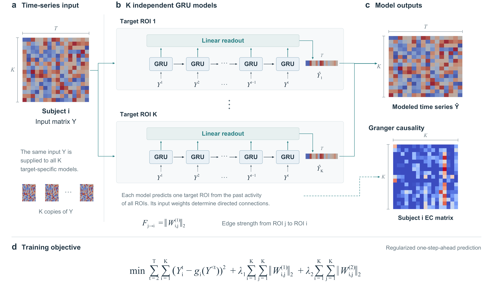

本科阶段：建立基础
我在华南农业大学学习大数据管理与应用。数据结构、计算机网络、模式识别与机器学习等课程，让我逐渐建立起对数据、算法和软件系统的基本认识。
课程之外，我接触了 Python、Java、C++ 以及 JavaScript 和 TypeScript，也尝试使用不同工具完成分析、开发和记录。这些实践把课堂概念带到了可以运行、可以检查的任务中。
研究实践：从问题到实验
本科期间，我参与过围绕脑功能影像与时间序列因果关系的创新训练项目，并承担团队协调和模型实验相关工作。在 Linux 环境中搭建与训练模型的过程，让我接触了 GRU、格兰杰因果分析等方法，也更重视实验记录与结果核查。

研究工作不能停留在“模型跑通”。问题定义、数据处理、方法选择和结果解释，都需要能经得起反复检查。
开发实践：理解完整流程
在应用开发实践中，我使用 Ionic 和 React 参与移动端页面实现与联调；在计算机视觉相关任务中，接触过 OpenCV、YOLO、目标跟踪和 ROS2。不同任务的重点各不相同，但都要求把局部功能放到完整系统中验证。
这些实践把课堂知识与实际开发流程联系起来，涉及工程实现、沟通协作和问题定位等环节。
现在：计算机技术硕士阶段
目前我在深圳大学攻读计算机技术硕士。接下来会继续梳理学习方向，记录值得复盘的实验和开发过程。具体项目会在核实内容、确认可公开范围后，另外写成文章。